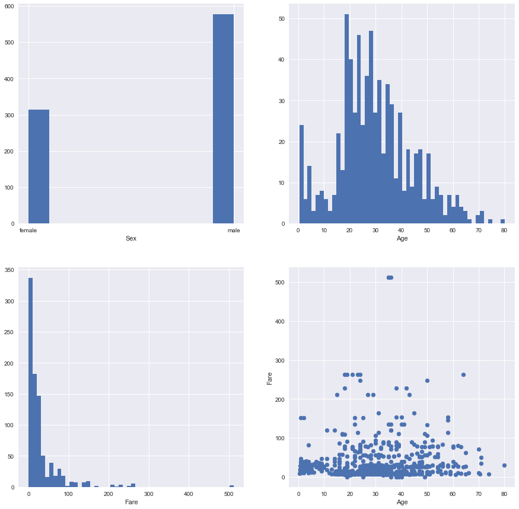
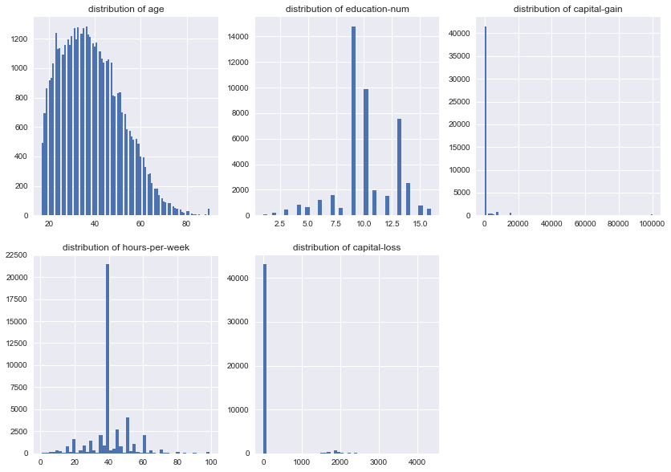
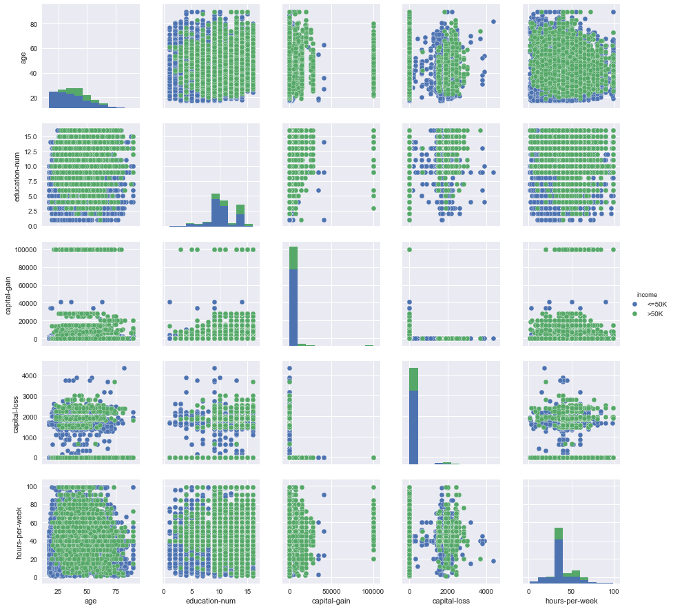
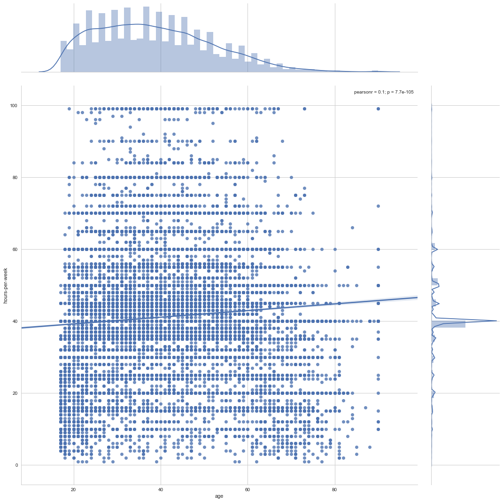

Data Exploration With Pandas
import pandas as pd import numpy as np import seaborn as sns import matplotlib.pyplot as plt %matplotlib inline sns.set()
Load data
titanic = pd.read_csv('data/titanic.csv')
Setting Name column as index
titanic_df1 = titanic.copy(deep =True)
titanic_df1 = titanic.set_index('Name') titanic_df1.head(2)
| PassengerId | Survived | Pclass | Sex | Age | SibSp | Parch | Ticket | Fare | Cabin | Embarked | |
|---|---|---|---|---|---|---|---|---|---|---|---|
| Name | |||||||||||
| Braund, Mr. Owen Harris | 1 | 0 | 3 | male | 22.0 | 1 | 0 | A/5 21171 | 7.2500 | NaN | S |
| Cumings, Mrs. John Bradley (Florence Briggs Thayer) | 2 | 1 | 1 | female | 38.0 | 1 | 0 | PC 17599 | 71.2833 | C85 | C |
Data Exploration: Titanic Dataset
titanic_df1.describe()
| PassengerId | Survived | Pclass | Age | SibSp | Parch | Fare | |
|---|---|---|---|---|---|---|---|
| count | 891.000000 | 891.000000 | 891.000000 | 714.000000 | 891.000000 | 891.000000 | 891.000000 |
| mean | 446.000000 | 0.383838 | 2.308642 | 29.699118 | 0.523008 | 0.381594 | 32.204208 |
| std | 257.353842 | 0.486592 | 0.836071 | 14.526497 | 1.102743 | 0.806057 | 49.693429 |
| min | 1.000000 | 0.000000 | 1.000000 | 0.420000 | 0.000000 | 0.000000 | 0.000000 |
| 25% | 223.500000 | 0.000000 | 2.000000 | 20.125000 | 0.000000 | 0.000000 | 7.910400 |
| 50% | 446.000000 | 0.000000 | 3.000000 | 28.000000 | 0.000000 | 0.000000 | 14.454200 |
| 75% | 668.500000 | 1.000000 | 3.000000 | 38.000000 | 1.000000 | 0.000000 | 31.000000 |
| max | 891.000000 | 1.000000 | 3.000000 | 80.000000 | 8.000000 | 6.000000 | 512.329200 |
plt.figure(figsize = [15,15]) plt.subplot(2,2,1) plt.xlabel('Sex') titanic_df1['Sex'].hist() plt.subplot(2,2,2) plt.xlabel('Age') titanic_df1['Age'].hist(bins =50) plt.subplot(2,2,3) plt.xlabel('Fare') titanic_df1['Fare'].hist(bins =50) plt.subplot(2,2,4) plt.xlabel('Age') plt.ylabel('Fare') plt.scatter(titanic_df1['Age'],titanic_df1['Fare']) plt.show()

Data Exploration with Charity Dataset
charitydf = pd.read_csv('data/charity.csv')
charitydf.head()
| age | workclass | education_level | education-num | marital-status | occupation | relationship | race | sex | capital-gain | capital-loss | hours-per-week | native-country | income | |
|---|---|---|---|---|---|---|---|---|---|---|---|---|---|---|
| 0 | 39 | State-gov | Bachelors | 13.0 | Never-married | Adm-clerical | Not-in-family | White | Male | 2174.0 | 0.0 | 40.0 | United-States | <=50K |
| 1 | 50 | Self-emp-not-inc | Bachelors | 13.0 | Married-civ-spouse | Exec-managerial | Husband | White | Male | 0.0 | 0.0 | 13.0 | United-States | <=50K |
| 2 | 38 | Private | HS-grad | 9.0 | Divorced | Handlers-cleaners | Not-in-family | White | Male | 0.0 | 0.0 | 40.0 | United-States | <=50K |
| 3 | 53 | Private | 11th | 7.0 | Married-civ-spouse | Handlers-cleaners | Husband | Black | Male | 0.0 | 0.0 | 40.0 | United-States | <=50K |
| 4 | 28 | Private | Bachelors | 13.0 | Married-civ-spouse | Prof-specialty | Wife | Black | Female | 0.0 | 0.0 | 40.0 | Cuba | <=50K |
charitydf.describe()
| age | education-num | capital-gain | capital-loss | hours-per-week | |
|---|---|---|---|---|---|
| count | 45222.000000 | 45222.000000 | 45222.000000 | 45222.000000 | 45222.000000 |
| mean | 38.547941 | 10.118460 | 1101.430344 | 88.595418 | 40.938017 |
| std | 13.217870 | 2.552881 | 7506.430084 | 404.956092 | 12.007508 |
| min | 17.000000 | 1.000000 | 0.000000 | 0.000000 | 1.000000 |
| 25% | 28.000000 | 9.000000 | 0.000000 | 0.000000 | 40.000000 |
| 50% | 37.000000 | 10.000000 | 0.000000 | 0.000000 | 40.000000 |
| 75% | 47.000000 | 13.000000 | 0.000000 | 0.000000 | 45.000000 |
| max | 90.000000 | 16.000000 | 99999.000000 | 4356.000000 | 99.000000 |
charitydf.info()
<class 'pandas.core.frame.DataFrame'> RangeIndex: 45222 entries, 0 to 45221 Data columns (total 14 columns): age 45222 non-null int64 workclass 45222 non-null object education_level 45222 non-null object education-num 45222 non-null float64 marital-status 45222 non-null object occupation 45222 non-null object relationship 45222 non-null object race 45222 non-null object sex 45222 non-null object capital-gain 45222 non-null float64 capital-loss 45222 non-null float64 hours-per-week 45222 non-null float64 native-country 45222 non-null object income 45222 non-null object dtypes: float64(4), int64(1), object(9) memory usage: 4.8+ MB
import matplotlib.pyplot as plt plt.figure(figsize = (14,10)) plt.subplot(2,3,1) plt.title("distribution of age") charitydf['age'].hist(bins = 100) plt.subplot(2,3,2) plt.title("distribution of education-num") charitydf['education-num'].hist(bins = 40) plt.subplot(2,3,3) plt.title("distribution of capital-gain") charitydf['capital-gain'].hist(bins = 100) plt.subplot(2,3,4) plt.title("distribution of hours-per-week") charitydf['hours-per-week'].hist(bins = 50) plt.subplot(2,3,5) plt.title("distribution of capital-loss") charitydf['capital-loss'].hist(bins = 50) plt.show()
<matplotlib.axes._subplots.AxesSubplot at 0x7efd84af9358>

plt.figure(figsize = (16,21)) sns.set() sns.pairplot(charitydf, hue="income")
<seaborn.axisgrid.PairGrid at 0x7efd84b28ba8> <matplotlib.figure.Figure at 0x7efd84b197b8>

sns.countplot(y="marital-status", hue="income", data=charitydf, palette="Greens_d");

plt.figure(figsize = (16,21)) sns.set(style="whitegrid", color_codes=True) sns.factorplot("sex", col="marital-status", data=charitydf, hue='income', kind="count", col_wrap=2);
<matplotlib.figure.Figure at 0x7efd860fd9b0>

plt.figure(figsize = (15,21)) plt.subplot(1,2,1) sns.countplot(y="age", hue="income", data=charitydf, palette="Greens_d"); plt.subplot(1,2,2) sns.countplot(y="hours-per-week", hue="income", data=charitydf, palette="Greens_d");

plt.figure(figsize = (15,21)) sns.jointplot(x="age", y="hours-per-week", data=charitydf,size=15,kind = 'reg');
<matplotlib.figure.Figure at 0x7efd7ee362b0>

plt.figure(figsize = (10,10)) sns.barplot(x="education-num", y="education_level", data=charitydf);

plt.figure(figsize = (16,16)) plt.subplot(1,2,1) sns.countplot(y="education-num", hue="income", data=charitydf, palette="Greens_d"); plt.subplot(1,2,2) sns.countplot(y="education_level", hue="income", data=charitydf, palette="Greens_d");